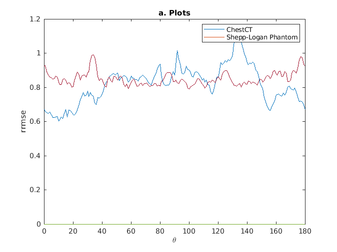
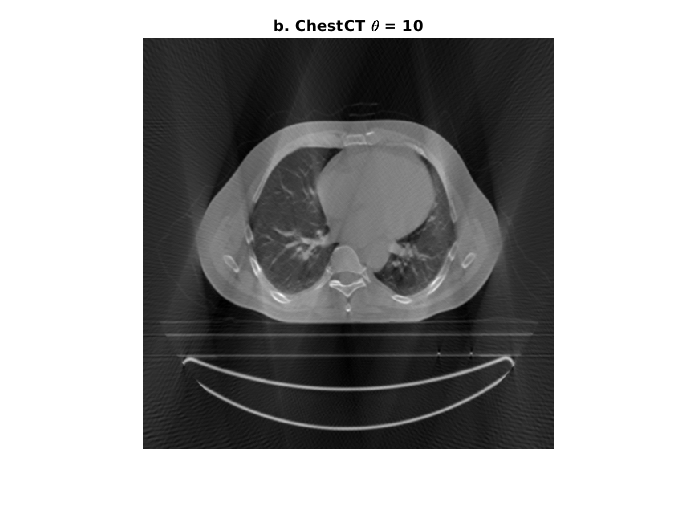
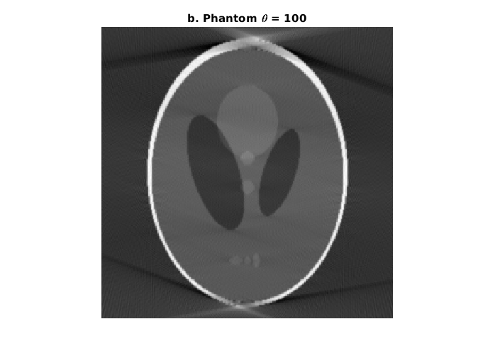

Report Q3
Contents
Init
tic %f = waitbar(0,'Initializing...'); chest = mat2gray(imread('../data/ChestCT.png')); phantom = mat2gray(imread('../data/SheppLogan256.png')); thetas = 0:1:180; t_chest = 0; t_phantom = 0; min_chest = 100; min_phantom = 100; chest_rrmse = zeros(length(thetas)); phantom_rrmse = zeros(length(thetas)); chest_img = chest; phantom_img = phantom;
Finding Values
%waitbar(0.4,f,'Finding Values...'); for t = 0:1:180 rng = mod(linspace(t,t+149, 150),180); [R,xp] = radon(chest,rng); iR_c = mat2gray(iradon(R,rng,length(chest))); chest_rrmse(t+1) = rrmse(chest,iR_c); [R,xp] = radon(phantom,rng); iR_p = mat2gray(iradon(R,rng,length(phantom))); phantom_rrmse(t+1) = rrmse(phantom,iR_p); if min_chest >= chest_rrmse(t+1) min_chest = chest_rrmse(t+1); t_chest = t; chest_img = iR_c; end if min_phantom >= phantom_rrmse(t+1) min_phantom = phantom_rrmse(t+1); t_phantom = t; phantom_img = iR_p; end end
a
%waitbar(0.7,f,'a. Plotting Values...'); figure() plot(thetas, chest_rrmse); hold on; plot(thetas, phantom_rrmse); xlabel('$\theta$','Interpreter','latex'); ylabel('rrmse'); legend('ChestCT', 'Shepp-Logan Phantom'); title('a. Plots')
b
%waitbar(0.85, f, 'b. Showing Imgaes...'); figure() imshow(chest_img); title("b. ChestCT \theta = " + t_chest); figure() imshow(phantom_img); title("b. Phantom \theta = " + t_phantom); %waitbar(0.99,f,'Finishing...'); %close(f); toc
Elapsed time is 19.567169 seconds. 
Note
Note that we are using the Ram-Lak Filter with L = 1